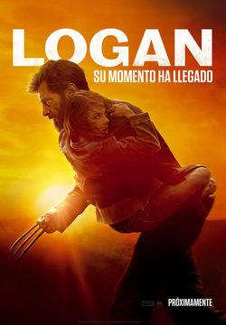
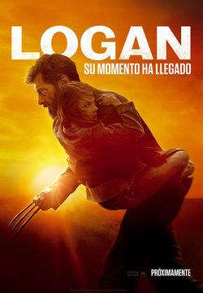

|  |
Wolverine, dirigida por: James Mangold
|  |
Logan(Logan: Wolverine en Hispanoamérica) es una película estadounidense de 2017 y la última de la trilogía de Wolverine, basada en el personaje de Wolverine, de Marvel Comics, y producida por Marvel Entertainment, TSG Entertainment y The Donner's Company y distribuida por la 20th Century Fox.
Han pasado los años y los mutantes están en declive. Logan, débil y cansado, vive alejado de todos hasta que acepta una última misión de Charles Xavier: la de proteger a una joven especial, de nombre Laura Kinney pero conocida como X-23, la última esperanza de la raza mutante.
| Personaje | Actor |
|---|---|
| Wolverine | Hugh Jackman |
| X-23/Laura | Dafne Keen |
| Profesor X | Patrick Stewart |
| Donald Pierce | Boyd Holbrook |
| Caliban | Stephen Merchant |
| Zader Ryze | Richard E. Grant |
Dejá aca tus comentarios